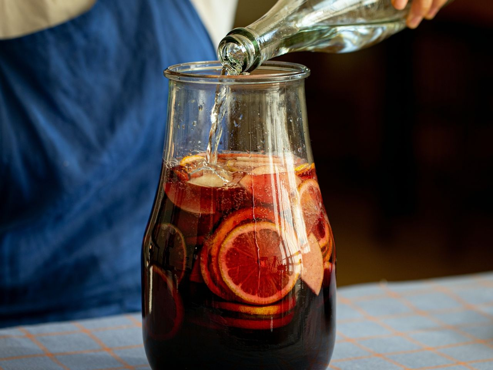

샹그리아
스페인에서 시작된 샹그리아는 맛과 향이 떨어진 와인이나 저렴한 와인을 마시기 위해 만들어진 레시피예요. 맛있는 과일을 듬뿍 넣어 샹그리아를 만들어보아요.

기본 재료 : 2L 기준
- 레드와인 750ml
- 탄산수 750ml
- 사과 1개
- 오렌지 1개
- 라임 2개
- 레몬 2개
- 비정제 설탕 1/4컵
조리 과정
- 1. 과일은 베이킹소다를 이용해서 깨끗하게 씻어주세요.
- 2. 깨끗이 씻은 과일은 껍질째 슬라이스 해주세요.
- 3. 손질한 과일과 설탕을 섞어주세요.(tip. 썰고 남은 양 모서리는 꾹 짜서 과즙도 함께 넣어주세요)
- 4. 보관용기에 설탕에 버무린 과일을 넣고 와인과 탄산수를 부어주세요.(tip. 설탕의 양을 늘리면 더욱 달달하게 드실 수 있어요)
- 5. 맛있게 즐겨주세요.(tip. 밀폐하여 냉장고에서 하루 숙성해 주세요)(tip. 일주일간 보관 가능해요)